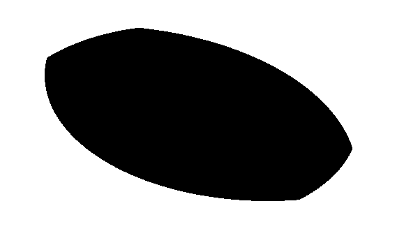

Существует простой метод отрисовки фигуры в фрагментном шейдере, которая будет состоять из нескольких фигур. Итоговая фигура получается путем пересечения входящих в нее фигур. Точка будет отображаться в том месте, где имеются точки всех фигур. Другими словами, отрисовывается пересечение всех фигур.
Пример ниже показывает, как отрисовывается фигура, состоящая из трех кругов.
float circleshape(vec2 position, float radius){
return step(radius, length(position - vec2(0.5)));
}
void main(void)
{
vec2 position = gl_FragCoord.xy / v2Resolution;
vec3 color = vec3(0.0);
float circle = circleshape(position, 0.2);
circle += circleshape(position+0.1, 0.3);
circle += circleshape(position-0.1, 0.25);
color = vec3(circle);
gl_FragColor = vec4(color, 1.0);
}
Результирующая картинка будет выглядеть так:

Функция circleshape рисует точки в тех местах